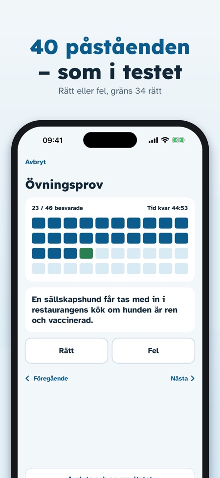
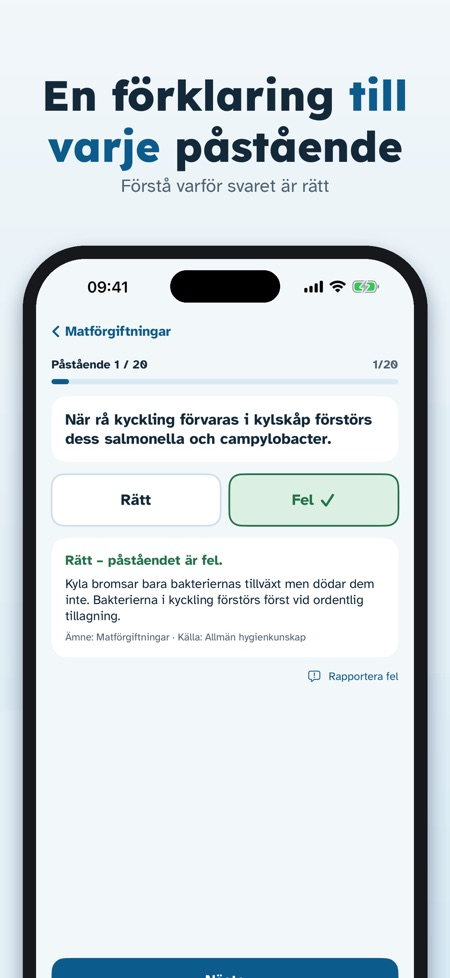
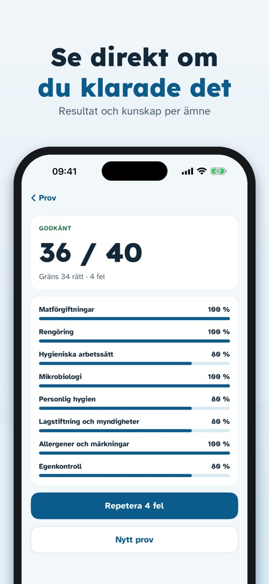

Övningsprov med förklaringar. Öva inför hygienpasstestet på svenska: rätt/fel-påståenden med förklaringar, övningsprov med timer och temperaturer på en sida. 448 påståenden på tre språk.



Hygieniapassi Treeni hjälper dig att öva inför hygienpasstestet i Finland med rätt/fel-påståenden som i testet – på svenska, finska eller engelska.
Ett övningsprov, en del av påståendena och ordlistan kan användas utan köp. Ett engångsköp låser upp alla påståenden, obegränsade övningsprov, felrepetition och temperatursidan. Ingen prenumeration.
Hygieniapassi Treeni är en fristående övningsapp. Den är inte Livsmedelsverkets (Ruokavirasto) app och utfärdar inget hygienpass; passet får du av en godkänd testare. Påståendena är våra egna och skrivna utifrån de publicerade kunskapskraven.